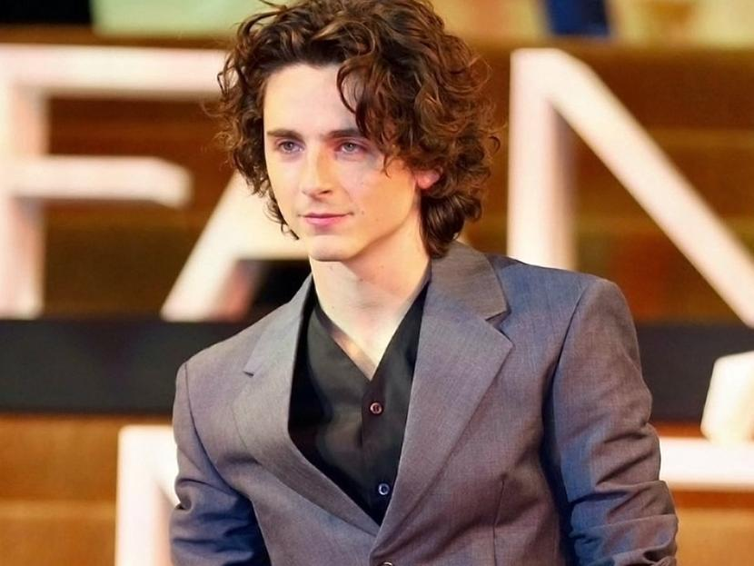

Nacimiento: 27 de diciembre de 1995 (edad 28 años) en Manhattan, Nueva York
Estatura: 1,78 m
Padres: Marc Chalamet, Nicole Flender
Hermana: Pauline Chalamet
Creció en un entorno artístico y participó desde niño en anuncios y en obras de teatro. En secundaria, donde coincidió con el también actor Ansel Elgort, se especializó en música, arte e interpretación. Tras acabar el instituto se matriculó en la Universidad de Columbia.
Debutó en el cine en 2014 con la película Hombres, mujeres & niños. Ese mismo año interpretó al hijo de Matthew McConaughey en la película Interstellar. Tras participar en algunas películas y series más, su carrera despegó definitivamente en 2017 con el estreno de Hostiles; Lady Bird, el debut en la dirección de Greta Gerwig y donde coincidió por primera vez con Saoirse Ronan, y Call Me by Your Name.

Derechos reservados por:
Montserrat Perez Nuño
Viviana Sahagun Vargas
Carolina Yazmin